Obtenga su Guía Práctica De Autocuración Energética para eliminar 80 tipos de dolor y enfermedades psicosomáticas en minutos.
✅Sin medicamentos costosos
✅Sin terapias a largo plazo
✅Sin perder tiempo buscando
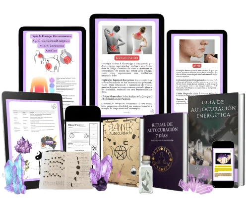
¡Esta guía será tu
BIBLIA DE AUTOCURACIÓN ENERGÉTICA!
Cuando una persona no es capaz de gestionar adecuadamente sus emociones, el cuerpo acaba somatizando estas cuestiones, dando lugar a enfermedades físicas.
La psicosomatización es una forma que tiene tu cuerpo de expresar la necesidad de resolver conflictos emocionales que no has resuelto conscientemente.
La “Guía de Autocuración Energética” es la solución ideal para estos problemas, aportando técnicas holísticas prácticas para restablecer el 100% de tu equilibrio emocional y energético, aliviando los síntomas psicosomáticos y promoviendo a la curación de adentro hacia afuera.
8.202 madres, padres, abuelos y estudiantes reportaron alivio físico y emocional luego de las prácticas de la Guía de Autocuración Energética.
 ¡N.° 1 en ventas en el nicho de terapias holísticas!
¡N.° 1 en ventas en el nicho de terapias holísticas!
+8200 estudiantes y 6823 reseñas positivas.
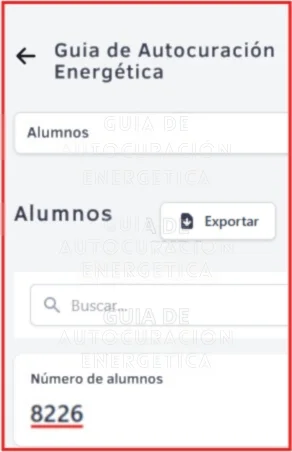
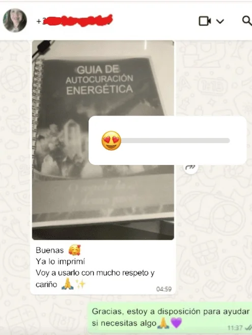
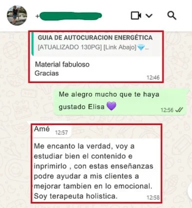

✅Transforma el estrés en paz interior
✅Convierte tu ansiedad en bienestar
✅Dile adiós al dolor físico y emocional en minutos
✅con métodos naturales probados
 ️Una guía que no sólo ofrece prácticas holísticas , sino que también está 100% basada en principios reconocidos por la medicina integrativa.
️Una guía que no sólo ofrece prácticas holísticas , sino que también está 100% basada en principios reconocidos por la medicina integrativa.
CON EVIDENCIA CIENTÍFICA SOBRE LA CONEXIÓN MENTE-CUERPO POR LA (OMS)
La Universidad de Harvard ya ha realizado estudios que demuestran que las técnicas que incorporan cristales reducen los marcadores de inflamación y mejoran la salud emocional.
Estudios publicados en el Journal of Ethnopharmacology muestran que hierbas como la valeriana y la lavanda pueden tener efectos ansiolíticos y antidepresivos, ayudando a tratar síntomas psicosomáticos como el insomnio, la ansiedad, el estrés y el dolor crónico.
Más De 100 Recetas Holísticas Prácticas para Mejorar Síntomas Psicosomáticos como:
- Eliminar la ansiedad generalizada y los ataques de pánico.
- Depresión y sentimientos de desesperanza
- Burnout (síndrome de desgaste profesional)
- Reduce el estrés y la procrastinación.
- Dolor crónico que no responde al tratamiento convencional.
- Insomnio (dificultad para conciliar el sueño o permanecer dormido)
- Bruxismo (rechinar los dientes) debido al estrés emocional.
- Pesadillas frecuentes relacionadas con el estrés
- La diabetes tipo 2 se agrava por el estrés crónico
- Dificultades para quedar embarazada (infertilidad vinculada a factores emocionales)
- Dolores de cabeza y migrañas
- Dolor de espalda (especialmente en la zona lumbar)
- Dolor de cuello y tensión en los hombros
- Fibromialgia (dolor crónico generalizado)
- Dolor articular sin causa médica clara.
- Síndrome del intestino irritable (SII)
- Gastritis y reflujo gastroesofágico
- Acné, a menudo relacionado con el estrés y la ansiedad.
- Pérdida de cabello (alopecia relacionada con el estrés)
- Trastornos alimentarios, como la anorexia y la obesidad.
GUÍA DE AUTOCURACIÓN ENERGÉTICA
+100 Tratamientos Prácticos
- Ya contamos con más de 100 tratamientos holísticos catalogados que cualquier persona puede realizar en casa en tan solo unos minutos al día.
Soporte por correo electrónico
- Sigue contando con nuestro apoyo para resolver tus dudas por Gmail. Escríbenos cuando lo necesites y te responderemos en breve.
No se requieren conocimientos previos.
- Además de recibir material simplificado y didáctico, sólo necesitarás leerlo y aplicarlo en la práctica!
Listo para imprimir
- Podrás acceder ahora y empezar hoy mismo desde cualquier lugar, con o sin acceso a internet, y además tendrás todo el material listo para imprimir en cualquier imprenta sin coste adicional.
Acceso de por vida
- El acceso es de por vida y puedes consultarlo cuando quieras o enviárselo a tus familiares y amigos. ¿Te imaginas ayudar a un ser querido con este material?
Ideal para profesionales de la salud mental.
- Como psicólogo o terapeuta, puedes tener a la mano una guía, respaldada por la medicina integrativa, para consultar siempre que desees tratamientos holísticos que no encuentras en Google, mucho menos en las universidades.
A continuación se muestra una vista previa del contenido de la Guía de autocuración energética:
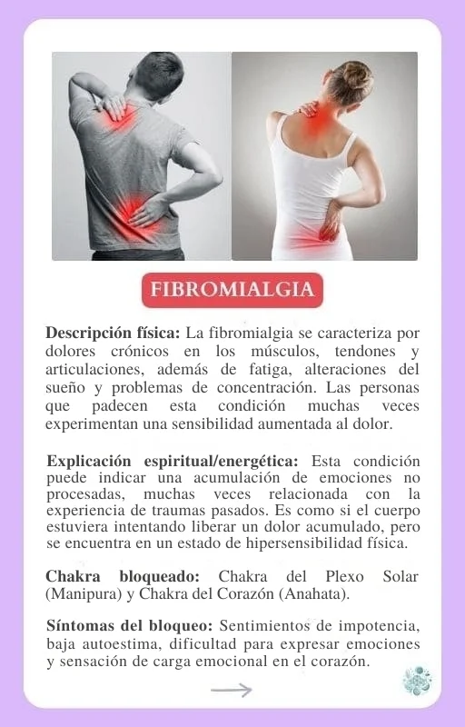
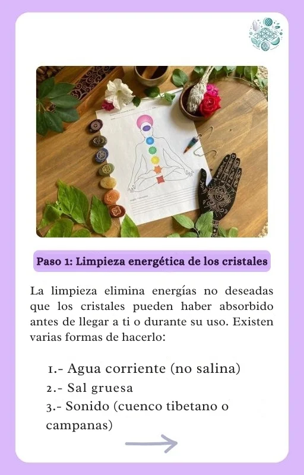
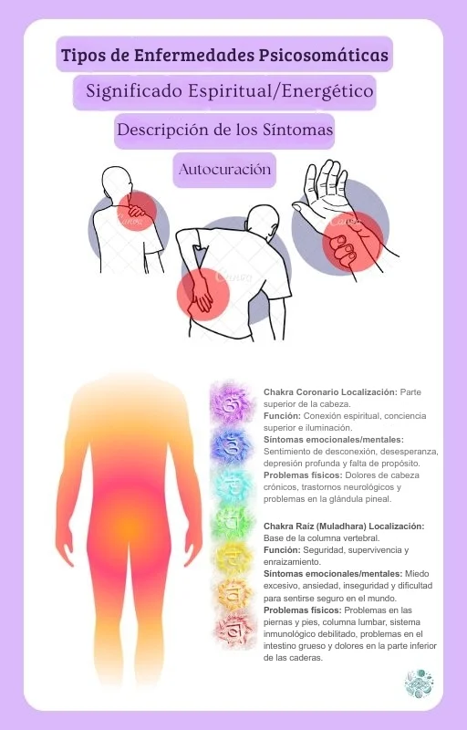
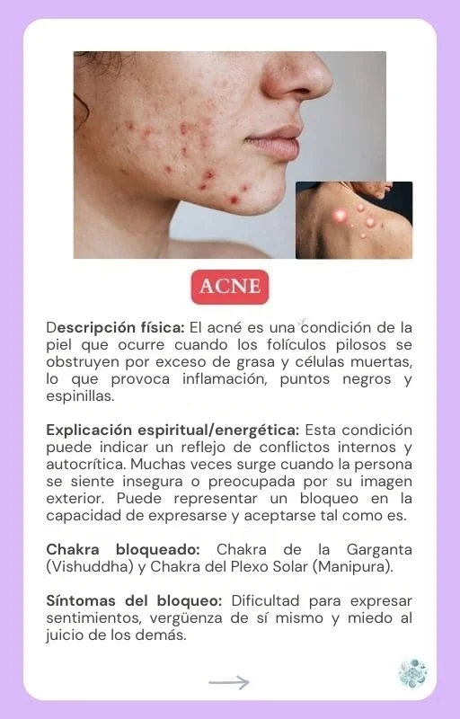
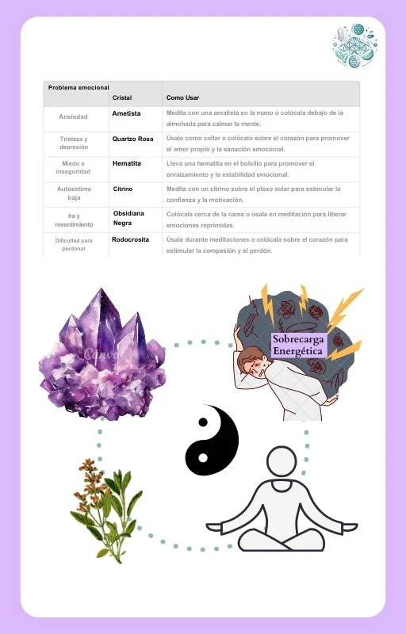
- Cómo esta guía transformará tu salud física, emocional y mental.
- Mejores prácticas para aprovechar al máximo el contenido.
- Una introducción a la energía de los cristales y su influencia en el campo energético humano.
- Cómo elegir el cristal adecuado: propiedades y beneficios de los diferentes cristales.
- Cómo las hierbas y los tés pueden complementar el uso de cristales para restablecer el equilibrio del cuerpo.
- Introducción al uso correcto de hierbas y tés en la curación energética.
- Técnicas para limpiar, energizar y programar cristales.
- Elixires de Cristal: Cómo preparar tus primeros elixires para uso diario.
- Técnicas para potenciar los efectos curativos de las hierbas.
- Tratamientos catalogados para más de 50 patologías entre las que se incluyen dolores de cabeza, insomnio, ansiedad, problemas digestivos, dolores musculares, entre otros.
- Recetas prácticas con combinaciones de cristales y tés específicos para cada condición.
- Identificación y tratamiento de los chakras desequilibrados
- Una guía sobre el uso de cristales específicos para alinear y equilibrar cada uno de los 7 chakras.
- Recetas avanzadas para preparar elixires para la curación emocional y física.
- Protocolos para tratamientos específicos, como mejorar el sueño, aumentar la energía y mejorar la concentración mental.
- Recomendaciones para terapeutas y profesionales que deseen aplicar estos conocimientos en las consultas.
- Consultas Personalizadas: Cómo crear protocolos de curación adaptados a cada caso.
Y mucho, MUCHO MÁS…
AL COMPRAR HOY LA GUÍA DE AUTOCURACIÓN ENERGÉTICA, RECIBIRÁS 3 BONIFICACIONES EXCLUSIVAS
 Regalo 1
Regalo 1
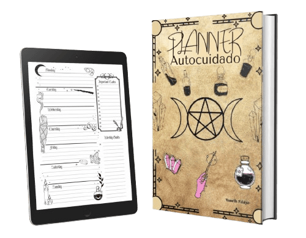
Planificador de autocuidado
Calendario semanal para implementar tus prácticas curativas y analizar tu progreso de autocuración.
Regalo 2
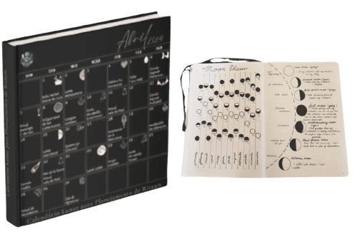
Calendario lunar para la planificación de rituales
Un calendario digital detallado con todas las fases lunares y los mejores días para realizar rituales de curación.
¡¡¡Super Bono!!!
Ritual de Autocuración de 7 días según tu número de nacimiento
(Disponible solo para quienes compren HOY)
✔️Ritual de 7 días personalizado según tu día de nacimiento.
✔️Descubre tu perfil energético único, misión de alma y bloqueos emocionales.
✔️Libera tensiones físicas causadas por tu vibración natal específica.
✔️Atrae salud, vitalidad y paz interior con técnicas diseñadas solo para ti.
¿Cómo puedes recibir este súper bono?
Tras confirmar tu compra HOY, recibirás INSTANTÁNEAMENTE por correo electrónico tu Ritual de Autocuración de 7 días personalizado según tu día de nacimiento.
Mira todo lo que recibirás:
- Más de 100 recetas catalogadas con cristales, tés y hierbas para mejorar el dolor físico y emocional.
- Planificador semanal de autocuidado (bonus)
- Calendario lunar para la planificación de rituales (Extra)
- Ritual de Autocuración de 7 días según tu número de nacimiento (Super Bonus)
- Formato PDF 100% digital, listo para imprimir.
- Material único y exclusivo
- Acceso de por vida y actualizaciones gratuitas.
- Soporte individual vía Gmail
TU BIBLIA DE LA AUTOCURACIÓN ENERGÉTICA
Recetas holísticas prácticas con cristales, tés y hierbas para mejorar los síntomas psicosomáticos físicos y emocionales.
El costo total de todos los materiales es superior a $90 USD.
Pero, sólo con esta oferta, el precio promocional que invertirás hoy es sólo de:
$ 7,97 USD
¡Garantía de satisfacción de 7 días o le devolvemos su dinero!
Tienes 7 días para probarla. Si durante este periodo crees que la Guía de Autocuración Energética no es para ti, contáctanos por correo électronico y te reembolsaremos el 100% de tu inversión inmediatamente.
Preguntas frecuentes
🔻 1. ¿ESTA GUÍA REALMENTE FUNCIONA PARA ALIVIAR EL DOLOR Y LOS PROBLEMAS EMOCIONALES?
Sí, la ‘Guía de Autocuración Energética’ se desarrolló con base en los principios de la medicina integrativa e incluye prácticas con respaldo científico. Estudios de la Universidad de Harvard y publicaciones como la Revista de Etnofarmacología ya han demostrado los beneficios del uso de cristales, hierbas y técnicas energéticas para reducir la inflamación, la ansiedad, el estrés y mejorar la salud emocional. Además, más de 1500 personas han reportado resultados positivos tras aplicar las recetas de la guía.
🔻 2. NUNCA HE USADO CRISTALES O HIERBAS ANTES, ¿PODRÉ APLICAR LAS RECETAS?
¡Por supuesto! La guía se creó con un lenguaje sencillo y didáctico para que cualquier persona, incluso sin experiencia previa, pueda empezar a aplicar las técnicas de inmediato. Encontrarás una guía detallada paso a paso, que incluye cómo elegir y preparar los cristales y las hierbas, lo que hace que todo el proceso sea fácil y accesible. Y si tienes alguna pregunta, nuestro equipo está disponible por gmail para ayudarte.
🔻 3. ¿NO SERÍA MÁS FÁCIL PARA MÍ ENCONTRAR ESTA INFORMACIÓN DE FORMA GRATUITA EN INTERNET?
Aunque hay información disponible en línea, la ‘Guía de Autocuración Energética’ es un compendio único con más de 100 recetas catalogadas y validadas para tratar el dolor físico y emocional, que no encontrarás organizadas en un solo lugar. Además, incluye prácticas avanzadas, estudios recientes y protocolos probados y seleccionados para garantizar la máxima eficacia, todo ello con el respaldo de la medicina integrativa.
🔻 4. ME TEMO QUE ESTOS MÉTODOS NO TIENEN BASE CIENTÍFICA Y SON PURO MISTICISMO.
Las prácticas que utilizamos en esta guía se basan en estudios científicos rigurosos. Por ejemplo, la Organización Mundial de la Salud (OMS) reconoce la importancia de la integración entre cuerpo y mente para la salud. Además, investigaciones de la Universidad de Harvard demuestran que las terapias complementarias, como el uso de cristales y hierbas, pueden reducir los indicadores de estrés y promover el bienestar. Esto no es misticismo, sino un enfoque holístico basado en la ciencia.
🔻 5. NO TENGO MUCHO TIEMPO LIBRE EN MI RUTINA DIARIA, ¿PUEDO APLICAR LAS TÉCNICAS?
Esta guía está diseñada para adaptarse a tu rutina, incluso si tienes poco tiempo. Las recetas se preparan en tan solo unos minutos al día, y muchas son prácticas y fáciles de integrar en tus actividades diarias. Además, recibirás un Planificador de Autocuidado para ayudarte a implementar estas prácticas de la forma más eficiente posible.
🔻 6. ¿CÓMO FUNCIONA LA GARANTÍA DE 7 DÍAS?
¡Es muy sencillo! Si por alguna razón no estás satisfecho con la ‘Guía de Autocuración Energética’ durante los primeros 7 días posteriores a la compra, simplemente contáctanos por Gmail y solicita un reembolso completo. ¡Sin preguntas ni complicaciones!